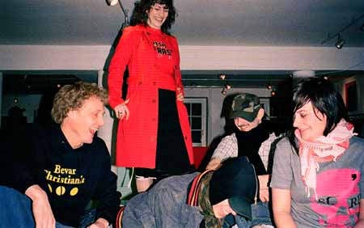

 Atle, Josephine, Anders, Matiaz og Djuna Barnes Det hemmelige selskab København har en undergrund. Selvom grændsen mellem, hvad der er undergrund og mainstream bliver mere og mere udtværet for hver dag, er den der endnu. Men det er stadig i undergrunden, at de gode idéer opstår. Her er fem som endnu er undergrund, og netop derfor et skridt eller to foran. Mød Matiaz, Atle, Josephine, Djuna Barnes og Anders. Djuna Barnes Maria er bedkr kendt under sit dj-navn. Djuna Barnes. Vi skal et par måneder til bage i tiden, da det pludselig gik stærkt for hende. Hun var ikke hypet, men blot respekteret for den gode musik, de gode mix og gode nætter på klubberne rundt i hovedstaden. Man kan javneligt høre hendes electro- rock-mix på “all dj’ are idiots”, klub Schhh eller Dameulove på Stengade 30. Uddrag fra artiklen. Tekst: Philip Agerbech. Foto: Emil Eskesen. |
||
|
Print denne side |